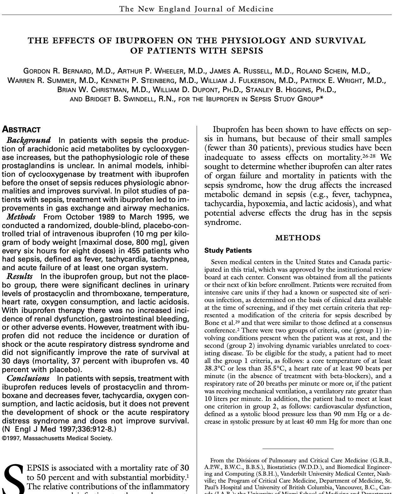

Statistical Inference with R
Inference for Continuous Data
Comparing means with confidence intervals, t-tests, and ANOVA
Dan Kerchner · George Washington University Libraries & Academic Innovation · Fall 2026
There will be more in the Spring!
📅 Find all GW Libraries workshops and events at library.gwu.edu/events
CONFIDENCE INTERVAL
A range of plausible values for the parameter
\(95\%\text{ CI for }\mu = (67.2,\ 73.5)\)
(estimation)
HYPOTHESIS TEST
A verdict on one specific claim about the parameter
\(H_0: \mu = \mu_0\) null hypothesis — or like \(\mu \leq \mu_0\), or \(\mu \geq \mu_0\)
\(H_A: \mu \neq \mu_0\) alternative — or like \(\mu > \mu_0\), or \(\mu < \mu_0\) (respectively)
(decision — \(H_0\) or \(H_A\))
Two views of the same thing: the 95% CI is exactly the set of \(\mu_0\) we would not reject at \(\alpha = 0.05\).
1-sample \(t\)-test \(H_0: \mu = \mu_0\)
If the true mean were \(\mu_0\), how often would we see a sample mean at least this far from \(\mu_0\)?
2-sample \(t\)-test \(H_0: \mu_1 = \mu_2\)
If the two groups had the same mean, how often would we see a difference in sample means at least this large?
ANOVA \(H_0: \mu_1 = \mu_2 = \cdots = \mu_k\)
If all \(k\) groups had the same mean, how often would we see the group means spread at least this far apart?
Same question every time: assume nothing is going on, then ask how surprising our data would be.
UNPAIRED
Two independent groups. Nothing links a particular dot on the left to a particular dot on the right.
2-sample \(t\)-test — \(H_0: \mu_1 = \mu_2\)
PAIRED
Each subject is measured twice. Every line is one subject, so each dot has exactly one partner.
1-sample \(t\)-test on the differences \(d\) — \(H_0: \mu_d = 0\)
Same dots on both sides — the lines are the only difference, and they are extra information. The two clouds overlap heavily, yet every subject went up: the paired test sees that, the unpaired test cannot. Pair only when the pairing is real.
TWO-TAILED start here
\(H_0: \mu_A = \mu_B\) \(H_A: \mu_A \neq \mu_B\)
that is, \(\mu_A > \mu_B\) or \(\mu_A < \mu_B\)
\(\alpha\) is split between the tails — catches a difference in either direction.
ONE-TAILED only with a reason
\(H_0: \mu_A \leq \mu_B\) \(H_A: \mu_A > \mu_B\)
or the mirror image: \(H_0: \mu_A \geq \mu_B\) \(H_A: \mu_A < \mu_B\) — pick one
All of \(\alpha\) sits in one tail — more power that way, none at all the other way.
Choose the tail from the science, before you see the data. Picking it afterwards because that is where the difference landed makes a “5%” test really a 10% one. And if the effect turns up in the other tail, a one-tailed test cannot report it — however large it is. When in doubt, two-tailed: it is what t.test() does by default, and what most readers assume.
BOTH TESTS
2-SAMPLE \(t\)-TEST ALSO
Roughly equal variances — t.test() defaults to Welch’s approximation, which does not assume it. Check with var.test().
ANOVA ALSO
Roughly equal variances across all \(k\) groups. Check with bartlett.test() if normal, car::leveneTest() if not. Welch version: oneway.test(var.equal = FALSE).
Not satisfied? Use a nonparametric test (Wilcoxon, Kruskal-Wallis), a bootstrap or permutation test, or a transformation. Independence is non-negotiable — no alternative test rescues it. That one needs a different design or model such as a paired test, or a mixed model.
“\(n \geq 30\)” is a rule of thumb, not a requirement. With normal data the \(t\)-test is exact at any \(n\) — small samples are exactly what Gosset built it for. With badly skewed data, 30 can be nowhere near enough. You need normality or a large \(n\), not both.
Learn to use R to read in data and conduct hypothesis tests for continuous measures
Bernard, G. R., Wheeler, A. P., Russell, J. A., Schein, R., Summer, W. R., Steinberg, K. P., Fulkerson, W. J., Wright, P. E., Christman, B. W., Dupont, W. D., Higgins, S. B., & Swindell, B. B. (1997). The effects of ibuprofen on the physiology and survival of patients with sepsis. New England Journal of Medicine, 336(13), 912–918.

Dan Kerchner | George Washington University Libraries
kerchner@gwu.edu
Appointments:
| me | R, Python, etc. | calendly.com/kerchner |
| Academic Commons Data Consultants | R, Statistics, Python, SAS, Excel, etc. | go.gwu.edu/DataConsulting |
| LAI Software developers | Python, web apps, HTML, etc. | calendly.com/gwul-coding |
These slides: kerchner.github.io/r4stats/continuous
Code: github.com/kerchner/r4stats/ in the continuous/R folder
R LibGuide: libguides.gwu.edu/r_stats
Statistical Inference with R · GW Libraries & Academic Innovation · kerchner.github.io/r4stats